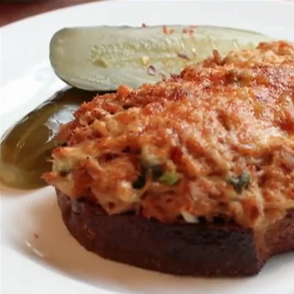

Tuna Melt Sandwich
Description

This is dedicated to all those chefs who tell you to never, ever mix fish and cheese together;
and yet there they are, at the diner at 2:00 in the morning. And you know what they eat?
Tuna melts. And the reason they do is because it is delicious.
Ingredients
- 1 jar oil-packed tuna, drained
- 1 tablespoon minced green onion
- 2 tablespoons finely diced celery
- 1 teaspoon Asian chile paste (such as sambal oelek)
- 2 tablespoons mayonnaise, or more to taste
- 1/3 cup fresh mozzarella cheese
- salt and ground black pepper to taste
- 2 tablespoons softened butter, divided
- 2 thick slices French bread
- 1/4 cup shredded sharp white Cheddar cheese, divided
- 1 pinch cayenne pepper, or taste
Steps
- Step 1: Place tuna into a mixing bowl and lightly break apart with a fork.
Add green onion, celery, capers, chile paste, and mayonnaise. Pinch small pieces from
mozzarella cheese into the tuna salad and stir to mix. Season with salt and black pepper;
refrigerate tuna salad until needed.
- Step 2: Heat oven's broiler. Line a baking sheet with aluminum foil.
- Step 3: Spread butter generously on both sides of French bread slices.
- Step 4: Broil buttered bread until golden brown on top, 2 to 3 minutes.
Flip bread slices and broil other side until toasted, 2 to 3 more minutes.
Remove from oven and turn bread slices over on the baking sheet so the darkest sides are on the bottom.
- Step 5: Gently spread tuna salad onto bread slices using 2 forks.
Press the salad onto the bread and spread tuna all the way to the edges of the bread.
Spread shredded sharp Cheddar over each sandwich. Dust tops with cayenne pepper.
- Step 6: Place sandwiches under broiler and cook until cheese is melted and bubbling, 5 to 6 minutes.
Zurück zu den Rezepten